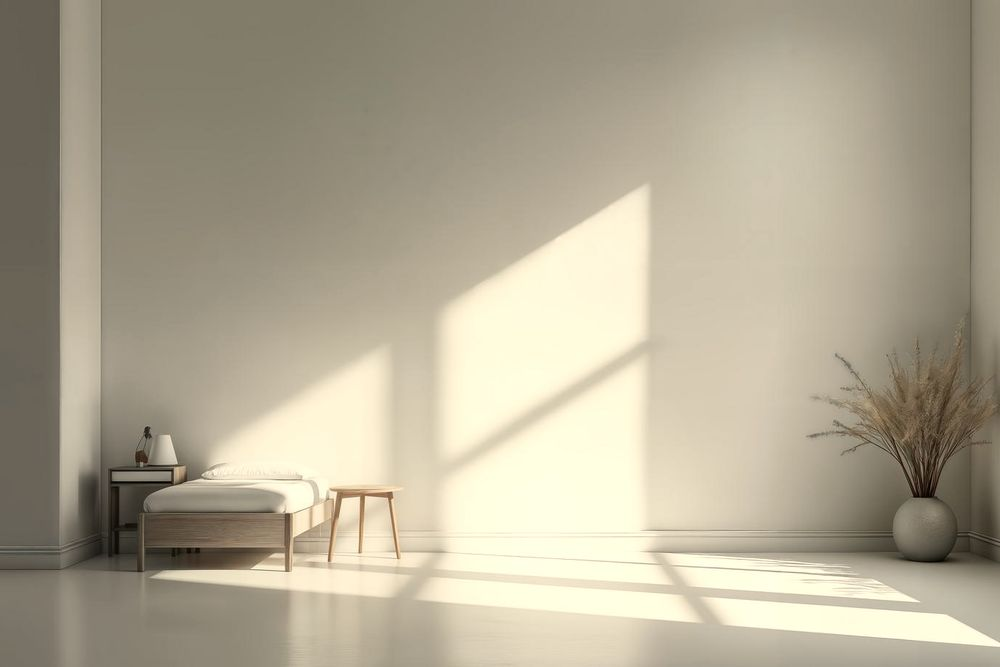

辻堂の住宅街にある、
ひと部屋だけの整体院
からだの結び目を、
ひとつずつ ほどく。
院長ひとりで、1日6人まで。
午後は、窓の光が壁をゆっくり動いていきます。
施術室（写真はイメージです）
受付時間月・火・木・金 10:00〜20:00／土・日・祝 9:00〜17:00／定休 水曜
受付カレンダーを見るどこが、
つらいですか。
はじめての日は、この紙に丸をつけるところから始めます。うまく言葉にできなくても大丈夫です。丸をつけたところから、一緒に見ていきます。
丸のついた番号を押すと、くわしい説明のページに移ります。
問診票整体院 ほどく
お名前辻堂 花子日付10月27日
いつから？半年くらい前から。在宅の仕事になってから。
はじめまして。
院長の宮下です。
整形外科のリハビリ室で9年、のべ8,000人ほどのからだを見てきました。病院ではひとりに使える時間が短く、「もう少し話を聞けたら」と思うことがたくさんありました。それで2021年、辻堂に、ひと部屋だけの院を開きました。
ほどくでは、強くもみません。痛いほど押すと、からだは身がまえて固くなるからです。手のひらで時間をかけて圧をかけ、筋肉が自分からゆるむのを待ちます。ボキボキ鳴らすこともしません。
それから、つらいところだけを見ないようにしています。肩がこる理由が、足首や呼吸の浅さにあることもあるからです。どこから ほどくかは最初に一緒に決めて、紙に書いてお渡しします。
おうちでの体操は、毎回ひとつだけ。宿題が多いと続かないので、1日30秒でできるものから始めます。
小さな院ですが、どうぞ気軽にいらしてください。
整体院 ほどく 院長宮下 さき柔道整復師（国家資格）
院長のことをもっと読む料金
すべて税込です。整体は健康保険の対象外です。
- はじめての方お話を聞く時間＋整体60分（全体で90分）
- 7,700円
- 整体 60分2回目からの基本のコース
- 6,600円
- 整体 30分首・肩だけ、など部分的に
- 3,850円
- 産後ケア 60分お子さま同室OK・木曜午前
- 6,600円
はじめての日の90分
着替えは院にあります。お仕事帰りの服のまま来てください。
- 0〜15分
お話を聞く
問診票に丸をつけて、いつから・どんなときにつらいかをうかがいます。
- 15〜25分
からだを見る
立ち方や首の動きを一緒に確かめて、どこから ほどくかを決めます。
- 25〜85分
整体
痛かったら、すぐに言ってください。半分くらいの方が、途中で眠ります。
- 85〜90分
おうちでのこと
今日の体操をひとつと、次に来る目安をお伝えします。
「前回からどうでしたか」
2回目からの問診票には、この欄があります。書いてもらった言葉を、ご本人の了承を得てのせています。感じ方には個人差があります。
-
夕方の肩の重さで、仕事のあとは何もできませんでした。3回目くらいから、帰りに寄り道できるようになりました。
40代・事務のお仕事通って4か月
-
抱っこで手首まで痛かったのですが、子どもを横に寝かせたまま受けられるのが助かります。家での体操も1分で終わります。
30代・育休中通って2か月
-
強くもまれるのが苦手で、整体はずっと避けていました。押されている感じが少ないのに、終わると首が回ります。
60代・自営業通って1年
帰り道に、
海まで。
院から辻堂海岸までは、歩いて12分ほど。晴れた日は、海のむこうに富士山が見えます。
施術のあと、からだが軽いうちに少し歩いてみてください。院長のいちばんのおすすめです。
写真は湘南の海岸から見た富士山です（イメージ）。
受付時間・アクセス
| 時間 | 月 | 火 | 水 | 木 | 金 | 土 | 日・祝 |
|---|---|---|---|---|---|---|---|
| 10:00〜20:00 | ○ | ○ | ― | ○ | ○ | ― | ― |
| 9:00〜17:00 | ― | ― | ― | ― | ― | ○ | ○ |
最終受付は平日 19:00、土・日・祝 16:00。定休日は水曜です。
- 住所
- 神奈川県藤沢市辻堂（くわしい住所はご予約のときにお伝えします）
- 電車
- JR辻堂駅 南口から徒歩6分。南口のロータリーを海の方へまっすぐ、2つ目の信号を右です。
- お車
- 駐車場は院の前に2台。ご予約のときにお知らせください。
- 電話
- 0466-00-0000（施術中は出られないことがあります。折り返します）
よくあるご質問
痛くないですか？
強くもんだり、骨を鳴らしたりはしません。押す強さは、施術中に何度もおたずねします。「痛い」と言いにくい方は、手を軽く上げるだけで止めます。
健康保険は使えますか？
整体は健康保険の対象外です。料金はすべて自費で、税込の金額は料金のページにのせています。しびれや強い痛みがあるときは、先に病院での受診をおすすめします。
どんな服で行けばいいですか？
着替え（上下）をご用意しています。そのまま来ていただいて大丈夫です。スカートや細身のパンツの方も、院で着替えられます。
子どもを連れて行ってもいいですか？
はい。施術室にベビーカーのまま入れます。木曜の午前は「産後ケアの日」で、お子さま連れの方が多い時間です。
何回くらい通えばいいですか？
からだの状態とご予定によって、毎回いっしょに決めます。回数券をむりにすすめることはありません。1回だけ受けてみる、でも大丈夫です。
当日の予約はできますか？
空きがあればできます。当日はお電話がいちばん早いです。施術中で出られないときは、留守番電話に入れていただければ折り返します。
お知らせ
11月の臨時のお休み（11月14日・15日）
研修のため、11月14日（金）と15日（土）はお休みをいただきます。受付カレンダーにも反映しています。ご迷惑をおかけしますが、よろしくお願いいたします。
産後ケアの日を増やしました（毎週木曜の午前）
お子さま連れの方が多い木曜の午前を「産後ケアの日」にしました。ベビーカーのまま入れる施術室をご用意しています。ご予約のときに「産後ケア」をおえらびください。
WEB予約の受付を24時間にしました
これまで電話のみだった当日のご予約も、WEBの予約フォームから送れるようになりました。院から折り返しのご連絡をして、予約が確定します。